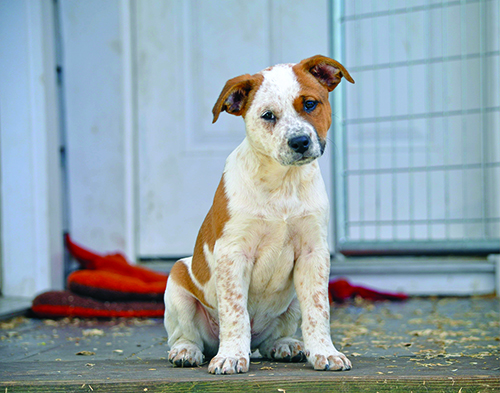
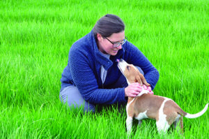
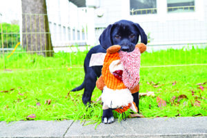

Give Your Puppy a Smart Start.
Wondering when and how you should start training your puppy? Immediately!
When it comes to puppy training, it’s never too early to start. Puppies are more than ready to learn by the time they leave the litter and transition into a home. After all, they’ve been learning since birth, so why not keep the ball rolling as soon as you welcome a puppy into your family?
"Catch her doing something right" whenever possible! When you notice your puppy doing anything you like, such as sitting calmly and quietly, or chewing on one of the toys you bought for this purpose, let her know she's being a good dog! Offer her a treat, praise, and/or a little bit of calm petting.
It’s our responsibility to teach puppies how to successfully live in our human world, which has a rule structure quite different from what they’re used to with their littermates. There are plenty of options for positive-reinforcement training starting at a young age: a well-run, in-person puppy kindergarten class; one-on-one instruction with a trainer; an online program; books and videos; your own knowledge of training; or a combination of options. No matter what you opt for, starting sooner, not later, is key to success. From the first day you bring your puppy home, have these three basic principles in mind:
1. Have clear goals for your puppy’s behavior from day one and support his understanding of them every day.
It’s important to have some basic training goals before your puppy comes home, so you can create clear behavior contingencies from the very beginning.
Your puppy is constantly learning. From the moment he sets paw in your home, he will be learning which behaviors get him things he wants and which ones don’t. Make it easy for him to get what he wants when he does behaviors you like, and prevent him from getting what he wants when he explores behaviors you don’t want him to practice. The more black and white your expectations, the easier it will be for the puppy to figure out what works for both of you.
So, as just a few examples: If you don’t want a grown, 80-pound dog jumping on you to get your attention, avoid petting the tiny, 8-week-old puppy when he jumps on you. Instead, if he happens to sit or even just greets you with happy eye contact and all four paws on the floor, go ahead and tell him what a good puppy he is and lovingly give him all the petting he wants! If you want a well-housetrained dog, commit to paying close attention to your puppy’s need to eliminate, not giving him a single opportunity to “make a mistake” indoors. And if you don’t want your adult dog to sleep with you on your bed or your nicest sofa, don’t allow the puppy to do so, either.
Gray areas are challenging for dogs. It’s not fair to make exceptions to what we know our rules will be later (because the puppy is so cute!) and then change the rules as she grows. It’s also harder to “fix” unwanted behaviors than to train correct behaviors from the beginning. (For more about this, see “The Biology of Early Learning”)
2. Make your interaction with your puppy rewarding and engaging.
Teach your puppy that spending time with you is fun! Be generous with rewards of food, attention, petting, and play so the puppy is eager to focus on you in anticipation of enjoyment.
A great strategy is to aspire to feed more of your puppy’s daily ration of food from your hand than from a bowl. This makes you the primary source of a pretty great thing and gives you plenty of calories to leverage to your advantage by reinforcing any behavior you’d like to see more of.
Build a strong history of reinforcement (with treats, toys, praise, and play) for behaviors that you like from your puppy; she will strongly associate you with all these good things, helping cement a solid relationship between you.
Be super generous with rewards with a young puppy because, as the puppy matures, environmental distractions will become more interesting, and it’s helpful for the puppy to have a strong history of finding you rewarding. This makes it easier for the puppy to continue to choose you, and what you have to offer, over the environment. No need to worry the pup will end up “only doing it for the food.” Since the food comes directly from you, you gain value by association. Plus, when you pair praise and petting with the delivery of food, the food increases the value of your praise and petting, so it is more reinforcing in the future if you choose to use fewer food rewards in training.
Don’t forget to mix lots of play into your interaction. It’s fun (for puppies and people!), it breaks up training sessions, and studies show following learning with play can lead to improved performance in subsequent sessions, when compared to immediately following learning with an opportunity to rest. Playing with your puppy, in ways you both enjoy, convinces your puppy that you’re a blast to be around because you know how to play all the best games. Who doesn’t like hanging out with the fun guy or gal?
What can you expect?
With frequent, short training sessions, most young puppies can start offering simple behaviors like “sit” in anticipation of “good stuff” as early as 6 to 7 weeks old, even before they leave the litter. If you really want to stack the training deck in your favor, look for a responsible breeder or rescue that provides early enrichment and basic training opportunities to young puppies in an effort to set them up for success when they meet their new families.
If you’re starting from scratch with the basics, it’s still reasonable to expect a young puppy to quickly learn to offer a “sit” for a food bowl or when approaching people, or follow a hand signal to lie down. In fact, in many cases, people report their puppies readily respond to cues for “sit,” “down,” “come,” “leave it” and a parlor trick or two by the time the puppy is 3 months old.
The catch? This degree of understanding is generally limited to the home environment. Sound familiar? “But he does it at home!” is one of the most often heard frustrations among dog owners when attending a group class or otherwise asking the dog to perform seemingly “known” behaviors away from home. Learning to do these behaviors in the face of a highly distracting, enticing world takes a little more time and maturity.
Learning the physical mechanics of the behavior is easy. Adding duration, making the behavior resistant to distractions, and properly generalizing the behavior so the dog understands the same rules apply anywhere, anytime is a process that takes time and patience. Try to avoid thinking your puppy truly knows a behavior until you’ve seen him be successful under a wide variety of circumstances. Until that point, he’s learning a behavior. Working in a new environment, around new people, other dogs, interesting smells, etc. makes it harder for the puppy to perform correctly. People often become frustrated and view the pup as being “stubborn,” when really, he’s just not developmentally mature enough to concentrate for long periods and in the face of distractions. He’ll get there with patience, maturity, and continued training support.
3. Keep training sessions short but frequent.
Like young children, puppies have short attention spans. The most effective training happens frequently throughout the day, but in short sessions each time, and with a high rate of reinforcement. Three to five minutes is perfect for a young puppy.
Try five repetitions of cheerfully saying your puppy’s name when she’s not looking, and rewarding her when she turns to orient toward you. Practice “sit” and “down” a couple of times, changing your position relative to the pup with each repetition to help her begin to “generalize” the behaviors, understanding that “sit” means the same thing whether you are standing right in front of her or next to her.
Bust out a toy for a quick round or two of tug, trading the toy for a treat to begin a “drop it” behavior, then playfully run away from the puppy, encouraging her to follow you with a happy, “Let’s go!” as you take off. Reward her when she catches up to you, with treats or another one of her favorite toys. Aim for three to five short sessions each day. Also, remember every interaction is an opportunity for learning, so be prepared to help her practice desirable behaviors every time you casually interact with her, too.
Formal training sessions that are short and fun keep the puppy’s head in the game. More importantly, they teach the puppy to enjoy and look forward to training sessions, creating a pup who exhibits a happy conditional emotional response (CER) – that is, she becomes visibly excited – when our behavior starts to predict a training session is imminent.
The Big 'A' (Adolescence)
Trainers who teach group classes have seen it a million times: Owners bring their young puppies to “canine kindergarten” classes and are delighted with all the cues and behaviors they and their puppies learn to do. After graduation, a few months roll by, and gradually, more and more of those formerly delighted owners start reporting that their puppies “don’t know anything anymore!” Sit, down, come, stay – all the basic behaviors the pups “knew” when they were tiny seem to be gone! What gives?
The simple answer is adolescence.
Adolescence is a natural part of canine development. It’s generally said to begin when the dog is about 6 to 9 months old and lasts until about 18 months old. (Different breeds mature at different rates. Smaller breeds mature faster than larger breeds. Whereas a toy breed might be fully mature at 12 months old, a giant breed won’t fully mature until closer to 2 years old, so the adolescent phase will vary from breed to breed.)
Dogs go through lots of changes during this time – physical growth spurts, hormone surges, and an increased need to chew in an effort to fully set adult teeth into the skull. These physical changes generally coincide with the secondary fear period, a developmental stage where dogs often react fearfully to things they’ve been fine with in the past.
If you don’t want your puppy to chew your shoes or any other household items, make sure you provide him with a large and varied assortment of “legal” chew items and toys, so he always has “good” choices available.
Much like in human adolescents, a hallmark of canine adolescence is a push for independence. Dog owners often report the adolescent dog is “blowing them off,” “being stubborn,” or otherwise seems to have forgotten everything she’s ever been taught.
Although it can be a trying time, patience is a virtue. Find ways to foster success and prevent failure in training. For example, if your young adolescent is overly distracted by other dogs when in a group class, add distance or use a visual barrier between the dogs to filter the distraction. If the dog is clearly driven by his nose, avoid letting him off-leash in unfenced areas. Avoid scary or painful punishers, as they can erode the relationship you share with your dog. The good news is, this too shall pass.
The Bottom Line
When we bring a dog into our life, it’s our responsibility to teach them how to successfully live in our human world. Good training is a partnership. It’s not something we do to our dog, it’s something we do with our dog. It’s also ongoing. We get out of it what we put into it. With modern-day positive reinforcement training methods, it’s easy to make training an enjoyable way of life that creates treasured companions for years to come.
Writer : Stephanie Colman